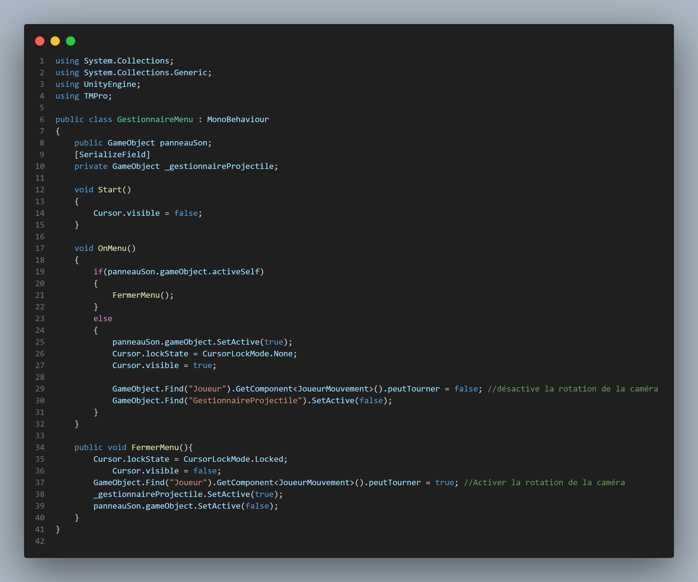
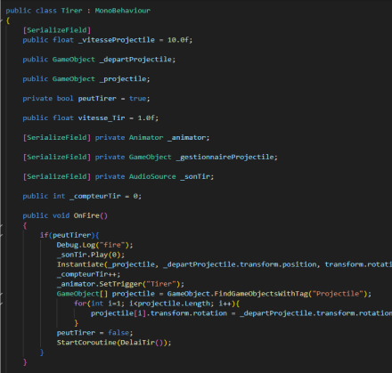

Bande annonce fictive du film Kung-Fu Hustle (2004) avec la trame sonore du film Noé (2014). Projet réalisé dans le cours de réalisation vidéo au Cégep Édouard-Montpetit.
Script pour le menu du jeu
Script pour le systeme de tir

Plusieurs défis se sont présentés lors de la réalisation de ce projet. Premièrement, trouver une façon de télécharger le film a été assez long et compliqué, et la version que j'ai trouvée n'est pas de très haute qualité.
Le deuxième problème qui s'est présenté était de faire fonctionner l'histoire raconté dans les tramessonores de bandes annonces fournies avec l'absurdité de Kung-Fu Hustle. Je trouve que le résultat finalest assez bon.
Le dernier problème qui s'est présenté est la synchronisation des voix. Kung-Fu Hustle contient peu de personnage féminin important contrairement à la bande annonce choisi qui contient plusieurs lignes de personnage féminin. J'ai dû chercher longtemps pour choisir des scènes qui contenaient un personnage féminin qui fonctionnerait avec la voix.